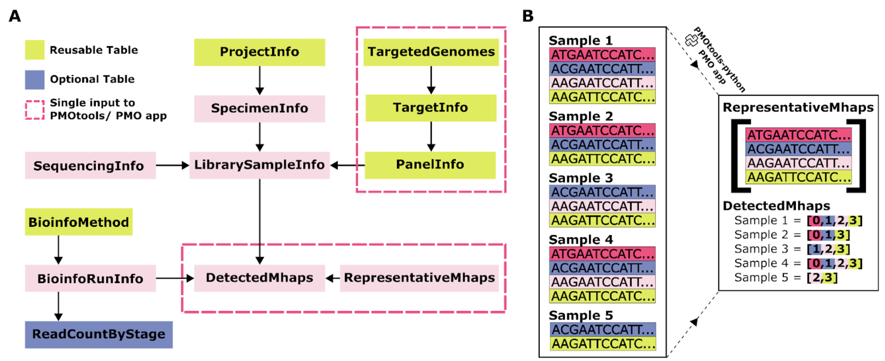

PMO fields overview
The design goal behind PMO
The format was created while attempting to stay consistent with previous standards like MIxS standards. These are the standards that the short read archive (SRA) use to validate metadata upon submission. This also helps to keep data standards to adhere to FAIR (Findable, Accessible, Interoperable, and Reusable).
The format was developed in order to achieve an efficient/low-weight format that contains the minimum amount of information about a targeted amplicon analysis without losing any important data. Tools are generated around this table to generate certain fields that are important but not necessary to keep constantly stored in this base class (e.g. aggreated SNP/INDEL calls, aggregated allele frequencies). To increase portability and to keep data internally consistent, format was designed to be contained within a singular file in JSON format which removes the limitation of storing data only in a tabular format. Though output generated from this file can still be a table for downstream usage in other tools but by storing in the flexible JSON format this allows storage in non-redundant organization (e.g. storing the sequennce only once while storing other data in lists).
Format is defined by utilizing LinkML to generate a general data scheme which creates various validation outputs like JSON Schema for validation tools. LinkML generates a website for viewing all fields defined in the format, https://github.com/PlasmoGenEpi/portable-microhaplotype-object.
Other notable users of LinkML/MIxS National Microbiome Data Collaborative Schema
Format shcema
A json-schema for the format
Top Level Schematic
 (A) Schematic of the top-level tables within PMO. Green boxes indicate tables that will commonly be reused across datasets. Pink dashed boxes highlight tables that are input collectively into pmotools-python or the PMO app via a single input table. (B) Illustration comparing current approaches to microhaplotype storage with storage within PMO. Current storage solutions often rely on long-form microhaplotype storage, with repeated listing of full nucleotide sequences, as shown on the left of panel B. In contrast, PMO replaces this with two efficiently linked tables, eliminating redundancy, as shown on the right of panel B.